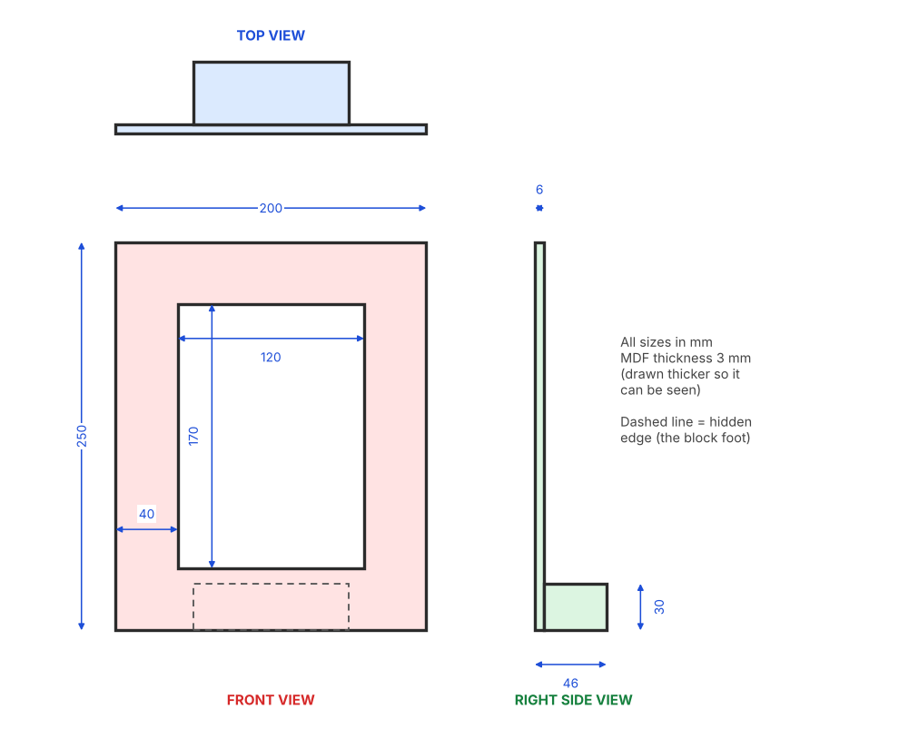
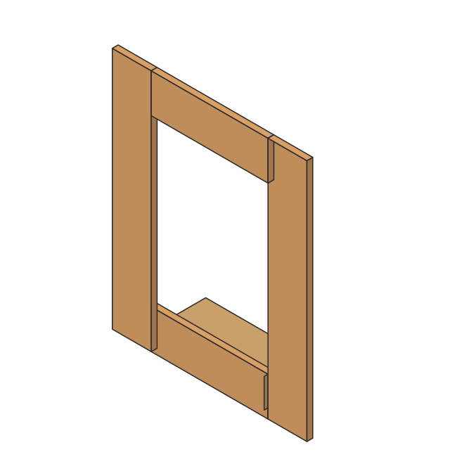

I can…
- I drew my frame in orthographic and isometric views.
- My drawing has dimensions in mm.
- I wrote a cutting list.
- I planned the making steps, tools and safety.
A planning drawing lets someone else make your frame
It includes: views with sizes, labels for parts and materials, a cutting list, and the steps to make it.


Drawing rules
| Rule | What to do |
|---|---|
| Views | Front view in the middle, top view above it, right-side view to the right. |
| Units | Write every size in millimetres (mm). |
| Lines | Thick outline, thin dimension lines, dashed lines for hidden edges. |
| Isometric | Vertical lines stay vertical. Other lines are at 30° from horizontal. |
| Labels | Name each part and its material. |
Practice first. Do the drawing exercises. You can also open a 3D model on the 3D models page and import it into Tinkercad to see the sizes.
Making plan
List the order of steps, the tools you will use, and the safety rules. MDF dust is harmful: always wear a mask and goggles, and ask an adult to help with cutting tools.
Planning sheet
Draw on paper first. Then complete this sheet.
Cutting list
| # | Part | Material | Qty | Width (mm) | Height (mm) | Thick (mm) |
|---|---|---|---|---|---|---|
| 1 | ||||||
| 2 | ||||||
| 3 | ||||||
| 4 | ||||||
| 5 | ||||||
| 6 |
Making steps
Tools and safety
Drawing checklist
Play as many times as you like. Log in first (box at the top) so your score and answers are saved to the class sheet. Your best score is shown next to each game.